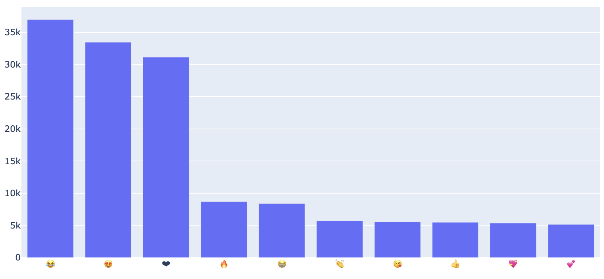
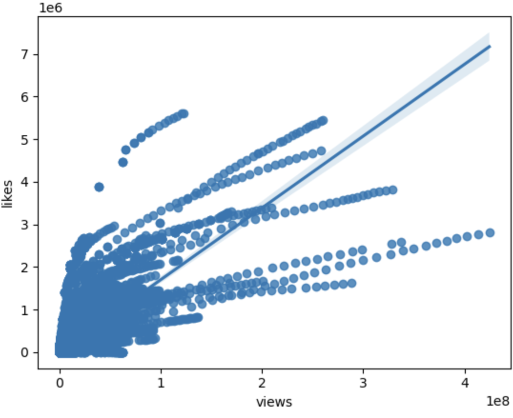
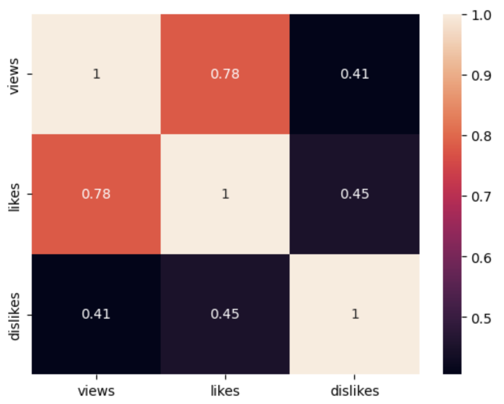
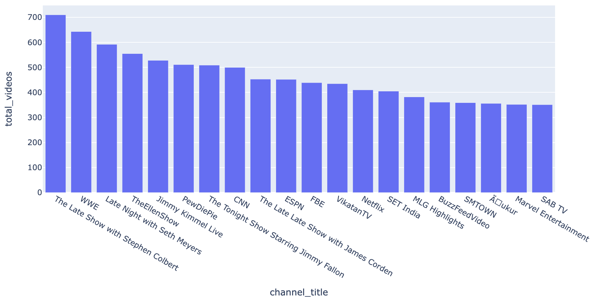

YouTube Analysis

Emoji Vs Frequency
It's a bar graph displaying the frequency of each emoji in my dataset.

Views vs Likes Analysis
This is a regression model graph of views vs likes, in my dataset.

Heat Map / Correlation table between likes, dislikes & views.
Heat Map / Correlation table between likes, dislikes & views according to my dataset.

Channel vs Total Videos Uploaded
Analysed the total videos uploaded on every channel in my dataset.